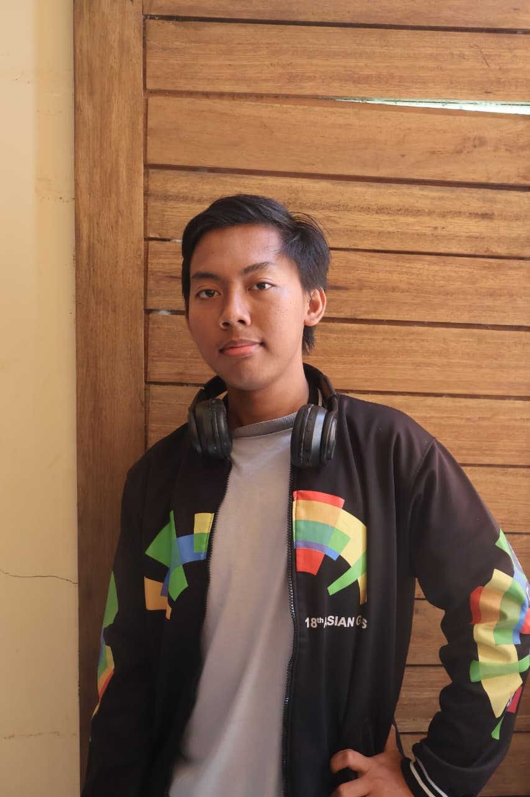

Transforming Data into
Interactive Digital Experiences
Who I Am
I'm Desan Rifqi Budiartoputra, a Geospatial Technology and Software Developer passionate about creating innovative digital solutions through Geographic Information Systems (GIS), Remote Sensing, web technologies, and application development. My work combines spatial data analysis, modern programming, interactive mapping, and creative digital design to build intelligent platforms that are both functional and visually engaging. By integrating technology with real-world challenges, I aim to develop scalable solutions that improve decision-making, increase efficiency, and deliver meaningful impact across environmental, agricultural, engineering, and business sectors.
What I Do
I develop innovative digital solutions by combining Geographic Information Systems (GIS), Remote Sensing, web development, application development, and modern programming technologies. My expertise ranges from creating interactive maps and performing spatial data analysis to developing web-based GIS platforms, mobile applications, and digital tools that streamline complex workflows. Using technologies such as ArcGIS, QGIS, Google Earth Engine, JavaScript, Python, HTML, CSS, and modern development frameworks, I transform geospatial information into practical solutions for environmental monitoring, agriculture, infrastructure planning, and data-driven decision-making. In addition to geospatial technologies, I specialize in UI/UX design and digital content creation, utilizing Adobe Photoshop and Adobe Premiere Pro to design intuitive interfaces, compelling visual identities, promotional materials, and multimedia content. By integrating mapping technology, software engineering, and creative design, I deliver scalable, efficient, and user-centered digital solutions that create value for businesses, researchers, government institutions, and communities.